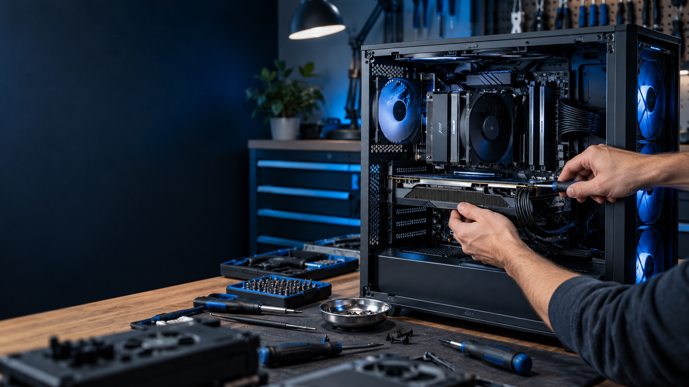

01
PC repair & troubleshooting
Crashes, startup problems, overheating, strange noises, error messages, and hardware issues—diagnosed without guesswork.
Desktop & laptop support
Local service in Cambridge, Ontario
Repairs, upgrades, custom builds, and straight answers—without the big-box runaround.
What I can help with
Whether a computer has slowed to a crawl or you’re planning a new gaming rig, I’ll help you understand the options before any work begins.
Crashes, startup problems, overheating, strange noises, error messages, and hardware issues—diagnosed without guesswork.
Desktop & laptop supportParts planning, compatibility checks, and a clean professional build. You buy and own the parts; I handle the build.
Gaming, work & family PCsRAM, storage, graphics cards, cooling, Windows setup, and sensible performance improvements that fit your PC.
Keep a good computer goingCareful dust removal, malware scans, temperatures, storage health, and a clear summary of anything worth watching.
Preventive maintenanceNot sure what to buy, upgrade, or avoid? Get practical guidance before spending money—without being pushed toward a particular brand or store.
Simple answers before expensive decisionsSimple from the start
Send a quick description of the problem. I’ll ask any useful follow-up questions, explain the likely next step, and arrange a convenient drop-off or meet-up in the Cambridge area.
Start a conversationShare what the computer is doing, its age, and anything you’ve already tried.
I’ll outline the next step and confirm the approach before moving ahead.
Choose a practical drop-off or local meet-up—no home address is published online.
A good fit when…
✓Your computer is slow, unstable, noisy, or overheating.
✓You want to upgrade without replacing everything.
✓You have parts in mind but want a compatibility check.
✓You want a custom build assembled cleanly and carefully.
✓You need someone to explain the options in plain language.
✓You’re local to Cambridge or the surrounding area.
Questions, answered
Yes. The best repair path depends on the device and issue, so include the make, model, and symptoms in your request if you can.
I can help plan and check the component list. You purchase the parts directly, so you retain the receipts and warranties, and I assemble and configure the PC.
After we discuss the job, we’ll arrange a drop-off or convenient local meet-up. A residential address is never posted publicly.
Yes. Send as much detail as possible and I’ll follow up. Some problems require hands-on diagnosis before the full scope is clear.
Request a quote
Give me the short version. Submitting this form opens a prepared email in your email app—nothing is sent until you review and send it.
bell.ryan@gmail.com